The Animations designing in Microsoft Blend 2015 is very interesting and fun to do. Some Magical things happened when Objects move and animate.
Basically, there are two major animation techniques that are generally used. i.e. Frame-Based & Time-Based Animation.
In frame-based animation, the animation cut into frames and displayed one frame at a time. In old films, you might see that camera does this by recording many photographs (frames) per second, and, when it is played back, it feels like a moving picture. So it happened in a similar manner except that the frames can be further apart in time and the computer will animate and interpolate any changes in between. The problem with such kinds of animations is that they become resource intensive when they run.
In time-based animation, you define the start and end points of a visual transition, and the framework interpolates the property changes over time and displays the animation in our application. In UWP, the animation is time based, so don’t worry about frame based animation…
So Simply create a Blank Project in Microsoft Blend for Visual Studio;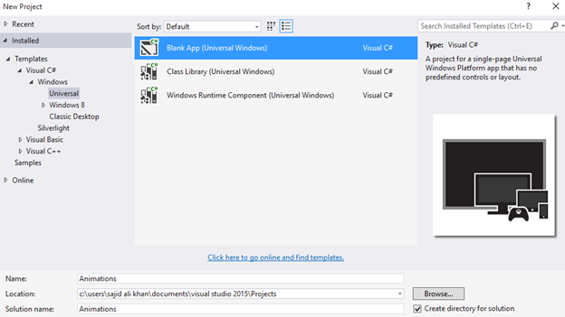
Now Simply draw an Eclipse for Tool Bar and apply Gradients to it;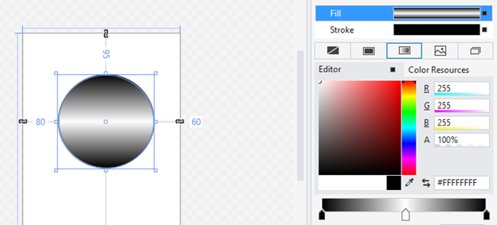
Now simply go to the ‘Objects and Timeline’ panel and click on the + button in the top-right corner of the panel, as shown in the following screenshot. This will add a storyboard into our application;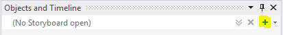
Now when will get a Popup to set the name of the Storyboard;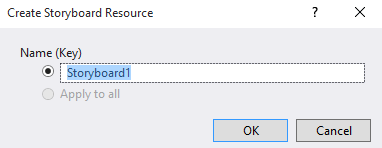
Simply name the Storyboard. Now when the Storyboard create, you will have the time line in the Objects and Timeline windows;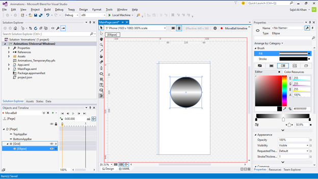
Now you can test the storyboard at the design time itself without having to run the application. When you select a storyboard, you see the playback controls on the Objects and Timeline panel. Let's go through them one by one from left to right;
If we select the storyboard and right-click on the animation name, we see multiple options in a popup. Each option in the popup is described in the following list;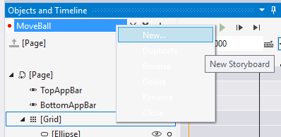
Now if you see the Timeline, you can see the great view through each you can easily manage the Timeline;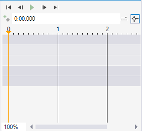
Animations in Blend are composed of timelines recorded on keyframes that represent the timing of property changes.
Timelines provides a structure to the animation sequence in our apps. We can think of the timeline as a layer on which the property changes of the objects are applied. The three sections of a timeline are depicted in the following screenshot:
The Properties Windows of Microsoft Blend also plays a major role with Story Board to manage Animations…
Moreover you can see the Keyframe in the Timeline.
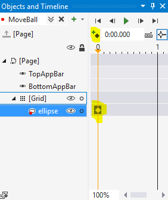A keyframe in an animation sets a specific state of an object. A sequence of keyframes defines the object’s movement that we see, and the position of a keyframe defines the object movement timing.
The first keyframe defines the starting of the animation and the next one determines how it's going to proceed. By changing the surrounding keyframes, we can change the starting or ending point of the transition, depending on whether the keyframe is before or after the transition.
For example, we can set a keyframe at the 0-second mark, record the position of the ball in the top-left corner of the art board, and then set a keyframe at the 1-second mark to record the position of the same ball in the bottom-right corner of the art board. Now, the animation will move the ball from the top-left corner to the bottom-right corner in 1 second.
We can use these keyframes and the storyboard to change any property of the object, and these properties can be visible or invisible.
Basically there are four types of keyframes in Blend;
So! Let’s Design some animations to get hands on experience;
Select the ellipse and click on the Record Keyframe button, as shown in the next image. This will record the current state of the selected object. So, when we click on the Record Keyframe button, make sure that we select only relevant objects just as we selected the ellipse here.
A keyframe is responsible for changing the properties of an object. Once we click on the Record Keyframe button, we can see a white mark in front of the ellipse object as it is the object that was selected when we clicked on Record Keyframe. So, this keyframe has the value of all the properties of ellipse at the 0 sec mark;
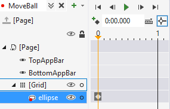So! That’s how we can easily insert a keyframe that is at the initial state for the animation to start.
Now to make some action, lets perform some transmission to the ball;
Simply move the playhead in the Timeline panel from the current position, that is, 0, to 1. Click on and drag the ellipse to the bottom-right corner of the art board. When we drag the ellipse, we will notice a few changes:
Now simply click upon Storybard name in the Objects and Timeline Window. You’ll get ‘Common’ in properties Windows. Now simply change the RepeatBehavior to Forever;
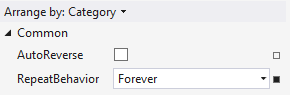So, we have figured out that storyboards are made up of structures called keyframes, and that these structures can be changed by specifying the time, property, and value.
Now simply go to Assets Windows and in Behaviors select the ControlStoryboardAction’ and drop into the Design surface.
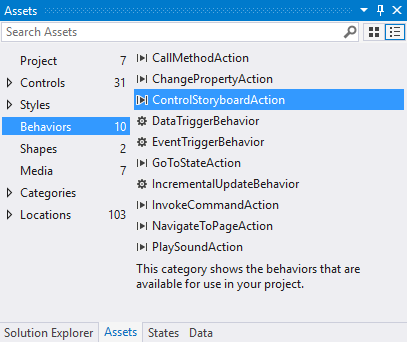And in the Properties Window, select the name of Storyboard in the Storyboard option;
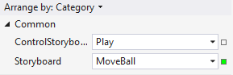Now when you run the project, you’ll see that the ball will bounce as expected…
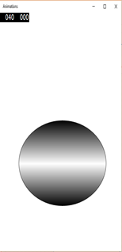Now some EeasingFunction, click upon Keyframe in Timeline. Now EasingFunction will appear in Easing Properties;
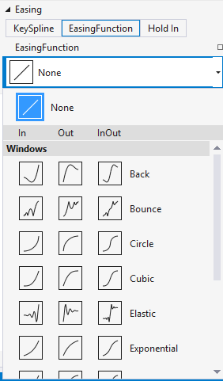And simply select the number of bounces and bounciness;
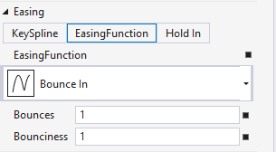Now when you run the Application, then the selected animations will work for you.
Further you can add further animations according to you your wish…
So! See how interesting is to play with animations...
In order to get a best hands-on experience along with the Blog. Try out the code either By MSDN Code Samples or By GitHub.. SoftwareWarrior
Copyright © 2015 - Designed by Sajid Ali Khan